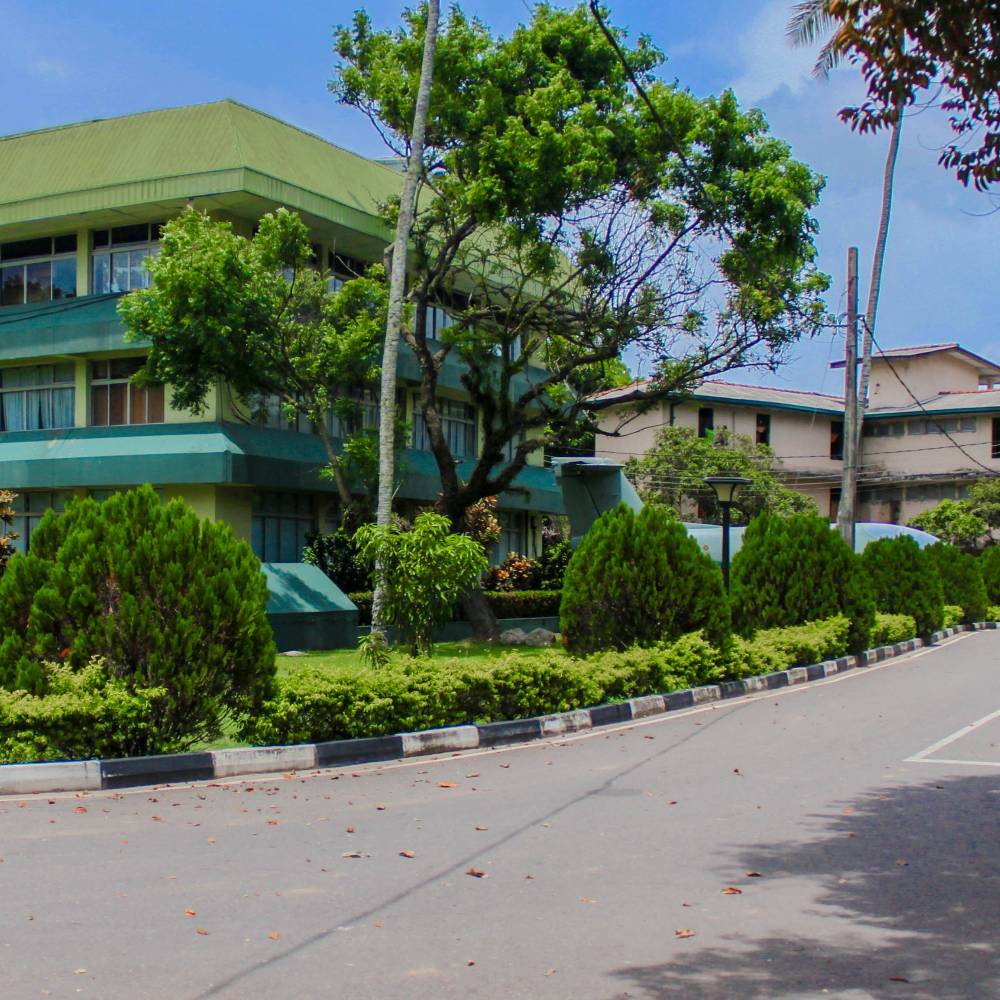

Welcome to the Examination Division
The Examination Division of General Sir John Kotelawala Defence University (KDU) is the main authority responsible for conducting examinations, and issuing examination results of candidates from the Faculty of Engineering, Faculty of Law, Faculty of Computing and Faculty of Management, Humanities and Social Sciences. In addition to the above, the Examination Division monitors all examination- related matters of other faculties and affiliated institutions. The diligent staff of the Division hold the sole responsibility of processing the results submitted by the examiners in accordance with the University by-laws, and conducting the Semester Pre-Results Board and Board of Examinations (BoE). After every BoE, results are sent to the relevant faculties to be published for their students' information. Following this, the results are submitted to the Senate. In addition to semester results, the final Board of Examinations for every batch of students that graduates from KDU and affiliated institutes are also conducted by the Examination Division. Further, Board of Examinations of FGS, FBESS, FASH and FOM are conducted under the direct supervision of the Division, and all examination payments related to the conducting of examinations and marking are prepared by this Division. Moreover, the Division provides assistance to the Registrar's Office to conduct selection tests for the recruitment of Officers Cadets, Day Scholars, and other staff members. The Examination Division also issues detailed degree certificates, semester results sheets, and academic transcripts of all faculties and accredited institutions.

Our Services
Official document requests and certification services
Request Detailed Degree Certificate/ Transcript (Convacation Year: Before 2025)
Request nowRequest Transcript/ Transcript with Marks (Convacation Year: Onwards 2025)
Request nowRequest Semester Results Sheet/ Degree Completion Letter
Request nowCounter Opening Hours
Documents & Certificates Collection
Please bring your student ID or NIC when collecting documents
Latest Notices
Final Examination Schedule
Final examination schedule for Spring semester is now available for download.
View DetailsResult Publication
Results for Engineering Faculty Semester 1 are now published.
Check ResultsExamination Guidelines Update
Important updates to examination conduct guidelines for all students.
Read MoreStudent Guidance
Essential information for examination procedures and policies
Examination Schedule
Check the exam timetable at least two weeks before exam period. Arrive 30 minutes early on exam day.
Examination Rules
Bring your student ID card, follow the invigilator's instructions, and adhere to all university examination policies.
Special Considerations
If you need special arrangements or face unexpected circumstances, contact the exam office immediately.
Results & Appeals
Results are published on the student portal. Appeals must be submitted within 14 days of result publication.